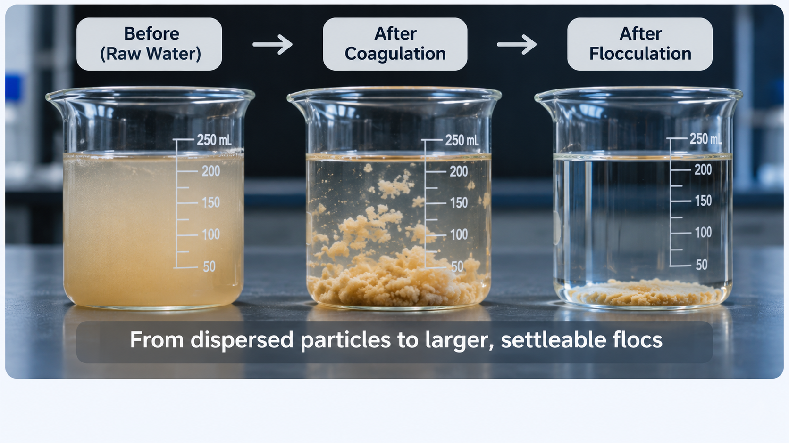

MY LEARNING JOURNEY
Notes on Water, Science & AI
Everything I learn, I share here.
A space for learning, exploring, and sharing ideas — one step at a time.
This is a learning journal, not a textbook. I write about the questions that come up while reading and exploring this field, then try to explain the answers in plain language. The goal is simple: make technical ideas easier to understand, one topic at a time.
The Learning Journal
Start with the basics and follow the path from water quality to applied AI.

Why Does Water Become Cloudy?
The science of suspended particles, scattered light, and why cloudy water is an engineering puzzle.
What makes a river look like chocolate milk after a heavy rain? This first note explores turbidity, tiny suspended particles, how we measure cloudiness, and why it matters for drinking-water treatment.

How Do We Make Tiny Particles Stick Together?
Coagulation, flocculation, and the jar test.
Fine particles do not always settle on their own. Discover how coagulants help destabilize them, how gentle mixing builds larger flocs, and how operators compare doses with a jar test.
Explore More Articles
Keep following the learning path from water treatment to applied AI.
Can Seeds Help Clean Dirty Water?
A closer look at natural coagulants and their limits.
POST 04 · AVAILABLEHow Does Weather Change the Water in a Lake?
Rain, runoff, wind, and changing turbidity.
POST 05 · AVAILABLEWhat Is ERA5-Land, and Why Do We Need It?
Weather reanalysis, soil moisture, runoff, and the limits of gridded data.
POST 06 · AVAILABLEWhy Is Predicting a Sudden Turbidity Spike So Difficult?
Class imbalance, rare events, and a 24-hour warning approach.
Use the arrows or scroll horizontally to explore more posts.
INDEPENDENT FEATURES
Webinars & Event Notes
Ideas and practical lessons from conversations across the water sector.
Watch the full webinar on YouTube. The video is embedded from the original YouTube source.
The Application of Artificial Intelligence (AI) in Water and Wastewater Treatment
Hosted by the International Water Association (IWA), this webinar brought together academic and industry perspectives on how AI can support modelling, real-time monitoring, and operational decision-making—from treatment processes to urban water infrastructure.
I found this session especially relevant to my own work on AI-assisted drinking-water treatment. The talks connected machine learning with the practical realities of water systems: imperfect measurements, complex physical processes, limited data, and the need for decisions that engineers can trust.
Who shared their work?
Prof. Peter Vanrolleghem
Université Laval · CanadaDiscussed data quality in wastewater treatment, unreliable sensors, and how machine learning can help monitor and understand complex treatment processes.
Dr. Nicolas St-Gelais
Cofounder & Scientific Director, CANN Forecast · CanadaPresented AI applications for water infrastructure, including moving beyond pipe age to identify risk and support more informed maintenance decisions.
Prof. Ruobin Dai
Tongji University · ChinaExplored data- and knowledge-driven machine learning for membrane filtration, showing why physical and chemical knowledge matters when data are limited.
What made this webinar meaningful to me
The three talks approached water from different angles, but they shared an important message: successful AI is not just about choosing a powerful algorithm. It also depends on trustworthy data, an understanding of the engineering system, and human judgement. That is closely aligned with the kind of work I have been exploring in drinking-water treatment decision support.
Wen Ma · Université de Sherbrooke, Canada
Yumeng Zhao · Harbin Institute of Technology, China